ECON 2316 • Microeconomic Theory • Chapter 8
Costs of Production
A UAW wage shock hits the gigafactory — what does the cost-minimizing input mix look like, and what does it cost?
Dr. Richeng Piao
Department of Economics
Northeastern University
Learning Objectives
By the end of class today, you will be able to…
8.1
Set up the firm's cost-minimization Lagrangian and state the tangency condition \(\text{MRTS}_{LK} = w/r\) and the equimarginal principle \(MP_L/w = MP_K/r\). (Bloom L2)
8.2
Solve for the cost-minimizing input bundle \((K^*, L^*)\), total cost \(c^*\), and conditional input demands at the gigafactory calibration. (Bloom L3)
8.3
Predict how \(L^*, K^*,\) and \(c^*\) respond to a wage shock using Cobb-Douglas comparative statics. (Bloom L4)
8.4
Apply the envelope theorem to recover marginal cost \(MC = \mu\) and Shephard's lemma \(\partial c/\partial w = L^*\) from the cost function. (Bloom L4)
8.5
Distinguish short-run and long-run cost curves, and derive the LR cost curve as the lower envelope of SR cost curves. (Bloom L5)
From the Production Function to the Cost Function
Ch 7 — What's feasible?
- Production technology \(Q = f(K, L)\)
- Marginal products \(MP_K, MP_L\)
- MRTS \(= MP_L/MP_K\) (slope of isoquant)
- Gigafactory: \(Q = 8 K^{0.4} L^{0.6}\)
Ch 8 — What's cheapest?
- Cost-min problem: \(\min\, wL + rK\) s.t. \(f \geq q\)
- Cost function \(c(w, r, q)\)
- Conditional input demand \(K^*, L^*\)
- Marginal cost \(MC = \partial c/\partial q\)
The cost-min problem is the producer-side analog of Ch 6's expenditure minimization. Same Lagrangian, same envelope theorem, same Shephard's lemma — just swap utility for production, prices for input prices, and Hicksian for conditional input demand. The duality machinery is identical.
December 2023 — A Wage Shock Hits the Gigafactory
The United Auto Workers won historic contracts at Stellantis, Ford, and GM, lifting top-tier production wages to \$42/hr base by 2027.
Tesla Gigafactory Nevada is non-union — but its labor market isn't. Within weeks, HR pushed base hourly pay up ~10%; fully loaded labor cost rose from \(w \approx \$45\) to \(w \approx \$50\)/hr.
Output target unchanged at \(Q = 32\) GWh. Capital stock fixed in the short run. The thing the plant can adjust is the input mix.
How much should the mix change? In which direction? At what cost?
+25%
UAW top-tier pay rise on signing (Stellantis, Ford, GM — Oct 2023)
+10%
Tesla Nevada hourly pay rise (Jan 2024 spillover)
\$50
Fully-loaded \(w\)/hr at the gigafactory (BLS ECEC Dec 2025)
0.13
Capital rental rate \(r\) (BEA + Damodaran 2026, $/yr)
The engagement, week two
Client: Gigafactory Nevada — Priya Raman, operations. Last week we mapped what her plant can do. Now she has prices — and a wage bill that just jumped. Our job: the cheapest recipe for 32 GWh, and what the shock costs her. (Her plant is stylised; the wage and rental data are real.)
Before isocost — what counts as a cost?
Costs That Matter
Not every cost should change your decision — some do.
Setup — A Year-One Proposal
First: which costs go on the calculator? You’re opening a burger shop, and your year-one proposal estimates revenue and costs:
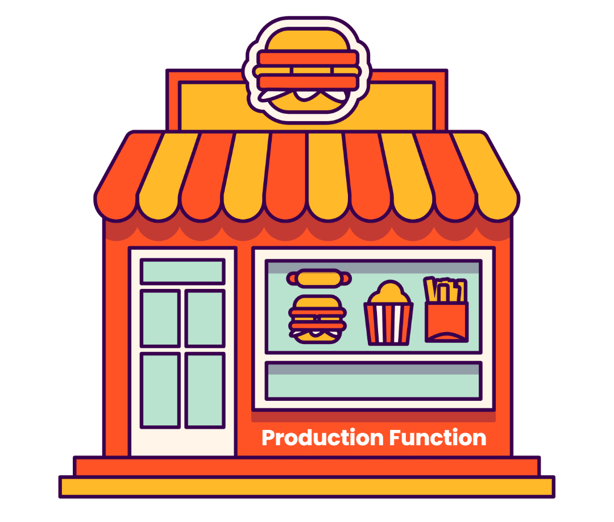
Proposal
Restaurant & Burger Shop — Year 1
| Item | Projected |
|---|---|
| Revenue (40K orders × \$25) | \$1,000,000 |
| Rent (Boston storefront, 12 mo) | \$120,000 |
| Staff wages (4 line cooks) | \$220,000 |
| Buns, patties, cheese, potatoes | \$280,000 |
| Utilities + internet + POS | \$48,000 |
| Equipment + insurance + tax | \$132,000 |
| Total explicit costs | \$800,000 |
| Projected acct. profit | \$200,000 |
Looks good … but is it really?
Costs That Matter — Opportunity Costs
Explicit costs
Out-of-pocket payments. Show up on a financial statement.
Wages, rent, ingredients, equipment…
Implicit costs
Opportunity cost of resources you already own — the forgone next-best alternative.
Owner’s salary elsewhere, interest on capital…
Rule 1 — count what you gave up. Economic Costs = Explicit + Implicit costs
Start-up: Restaurant / Burger Shop
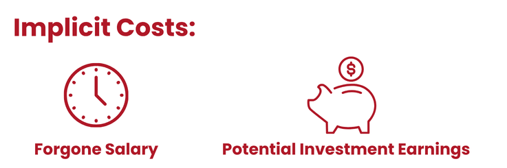
Accounting Profit
Accounting profit = Total revenue − Explicit costs
- TR = P × Q = \$25 × 40,000 = \$1,000,000
- Total Explicit Costs = \$800,000
- Accounting profit = \$1,000,000 − \$800,000 = \$200,000
Normal Rate of Return
Normal profit: occurs when economic profit = 0 — the firm earns exactly the normal rate of return on its inputs.
💡
π = +\$200K
- TR = \$1,200K
- Explicit = \$800K
- Implicit = \$200K
Economic Profit > 0
New entrants flock in
Opp. cost = \$200K
π = \$0
- TR = \$1,000K
- Explicit = \$800K
- Implicit = \$200K
Economic Profit = 0
Indifferent — stay or go
😴
π = −\$200K
- TR = \$800K
- Explicit = \$800K
- Implicit = \$200K
Economic Profit < 0
Owners exit the market
Press SPACE to reveal each scenario.
Why Implicit Costs Matter
Two owners run the same burger shop: same receipts, same \$200K accounting profit. The accountant sees two identical businesses. The one difference is what each owner gave up to be there.
Owner A — left a \$100K job
| Accounting profit | \$200K |
| − salary given up | \$100K |
| − interest given up (\$400K savings × 5%) | \$20K |
| Economic profit | +\$80K |
Stay — and rivals will want in
Owner B — left a \$240K software job
| Accounting profit | \$200K |
| − salary given up | \$240K |
| − interest given up (\$400K savings × 5%) | \$20K |
| Economic profit | −\$60K |
Leave — the job pays more
Only economic profit — explicit and implicit costs — tells you whether to stay. It is also the signal behind entry and exit: above zero draws rivals in, below zero pushes owners out, and in the long run it is driven to zero, the normal rate of return. (Entry and exit come in Ch 9.)
The flip side — what to ignore
Costs That Do Not Matter
Sunk costs are gone — they should never enter the next decision.
Poll — You’re Sony’s CEO
Key art © Sony Interactive Ent.
(Wikipedia, fair use)
Late August 2024. Sony’s \$40 hero shooter Concord launched on Aug 23. Two weeks in, it has sold about 25,000 copies. Should it keep running for another year?
Already spent
~\$400M
development (reported; disputed)
Marginal benefit, 1 more year
\$1–3M
25,000 × \$40 ≈ \$1M so far; triple it at best
Marginal cost, 1 more year
~\$40M
~210-person live team + servers
The \$400M is a press report Sony never confirmed. The benefit and cost are our estimates; Sony’s figures are private.
The room’s vote
What Sony did: C
Sep 3: shutdown announced. Sep 6: servers off, every buyer refunded. Oct 29: the studio, Firewalk, closed.
MB ≈ \$1–3M < MC ≈ \$40M, so stop. The \$400M is gone under A, B and C, so it cannot decide. Keeping it to “save” the \$400M is the sunk-cost fallacy.
Decisions to Consider — For the Upcoming Year
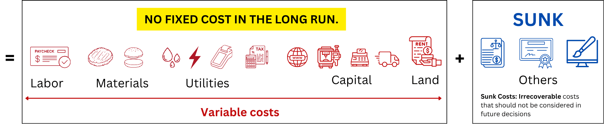
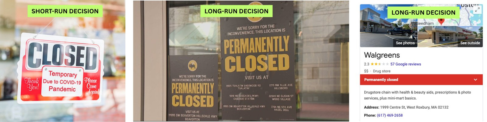
Long-run: every input is variable — only sunk costs stay behind. Short-run closures (CLOSED sign) reopen; long-run closures (Walgreens PERMANENTLY CLOSED) write off the sunk build-out.
Application — Walgreens Walks Away From Sunk Costs
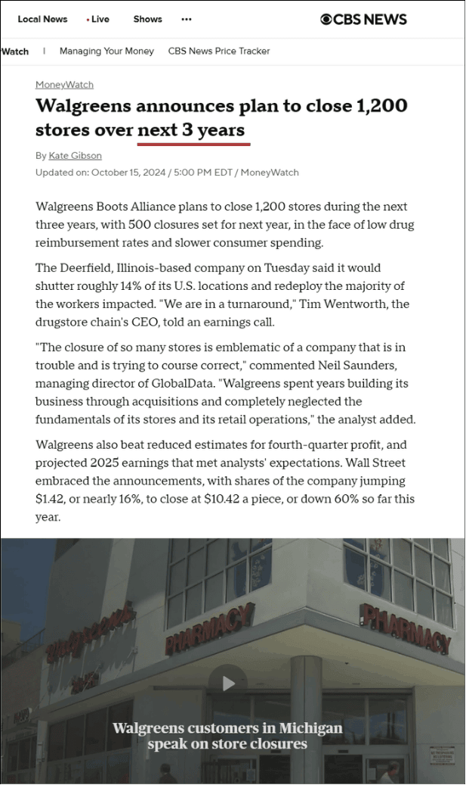
PERMANENTLY CLOSED
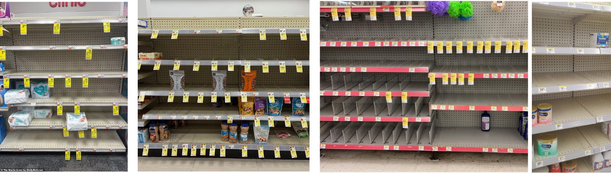
SUNK BUILD-OUT
~1,200
store closures
over 3 years (Oct 2024)
\$M / store
in fixtures, refrigeration,
leasehold — all sunk
Revenue < avoidable cost
Rule 2 — ignore what is gone.
The build-out never entered the call.
| Walgreens store | Frontier AI lab | |
|---|---|---|
| Sunk — ignore | build-out, fixtures, refrigeration | training runs already paid for |
| Avoidable — decide on this | rent, wages, electricity | compute for every query |
The AI Cost Pivot — Training vs Inference
Frontier AI labs face a textbook fixed-vs-variable cost split. Once a model is trained, the training spend is sunk; the per-query inference spend is what drives every future decision.
Training
Fixed / Sunk cost. Bursty — paid once, up front.
\$78M (GPT‑4)
\$191M (Gemini Ultra)
Source: Epoch AI / Stanford AI Index 2024
Inference
Variable / Recurring. 24/7 utility — paid every query.
60–80% of
total lifetime system cost
Source: NVIDIA earnings, hyperscaler 10-K filings
Once Gemini Ultra finished training, that \$191M became sunk. The decision facing Google every day after: do we serve queries at a positive margin over INFERENCE cost? The training cost is irrelevant to that call.
The AI Version — The DeepSeek Moment
January 2025: Chinese lab DeepSeek released a model that matched the frontier labs’ best, and said its base model’s final training run cost only a few million dollars. Rival labs had already spent far more training theirs.
\$5.6M
DeepSeek-V3’s reported final training run (2.79M GPU-hours × \$2). It leaves out the research before it.
−17%
Nvidia’s stock on Jan 27, 2025: roughly \$590B of market value gone in one day.
Sunk — ignore
What rival labs had already spent training their models. DeepSeek’s release did not change a dollar of it.
Avoidable — decide on this
What the next model, and every query, will cost from here. Those numbers moved, so the decisions moved.
The training money is gone whichever way a lab turns. The rational question after DeepSeek: given what a model costs to build and serve from now on, which next step pays? Staying the course to justify past spending is the fallacy on the next slide.
Sources: DeepSeek-V3 Technical Report (Dec 2024); market close, Jan 27, 2025.
The Sunk Cost Fallacy
\$5.6M
DeepSeek-V3 final run
−17%
Nvidia, Jan 27, 2025
This actually happened (January 2025). DeepSeek said its V3 model’s final training run cost about \$5.6M (earlier research excluded). Nvidia lost about \$590B of market value in one day. Rival labs’ past training spending was already sunk: their next move turns on what the next model and every query will cost, not on the money already gone.
Brainstorm 1 — AI’s Sunk Billions: Keep Running or Switch?
~\$400B
Big Tech capex in 2025 (Alphabet, Amazon, Meta, Microsoft)
\$700B+
their plans for 2026: chips, data centers, power
4.4%
of US electricity went to data centers in 2023
\$60 vs \$2.19
per million output tokens, Jan 2025: OpenAI o1 vs DeepSeek R1
Then vs now
My first computer, a hand-me-down from my dad: 256 MB of RAM, a 4 GB hard drive. My watch today is faster.
In dollars: computing cost about \$1,000 per GFLOPS in 2000 and \$0.03 by 2017, ~30,000× cheaper.
AI is moving faster: GPT-3.5-level AI cost \$20 per million tokens in Nov 2022, \$0.07 by Oct 2024 — 280× cheaper in two years.
Stanford AI Index 2025 · GFLOPS: Wikipedia / AI Impacts
1. The data centers already built are sunk. Keep running the expensive model, or switch? 2. Would you build the next \$10B data center today, if the same capability may cost a hundredth as much in a few years?
Where this may end: tokens as a commodity
If models get good enough and alike, buyers treat them as perfect substitutes and buy the cheapest token. Price falls toward the low-cost lab’s cost, and a high-ATC lab cannot charge more for the same tokens.
ISOCOST
where input prices come from · same-cost input combinations · the firm's budget line
Where Input Prices Come From
To pick the cost-minimizing recipe today, the firm needs two market-set prices: the wage (\(w\)) for labor and the rental rate (\(r\)) for capital.
Labor cost = wage
Construction-laborer market in Boston, MA: \(w \approx \$28\text{–}32\)/hour for entry-level; \(\$31.95\)/hour at Pioneer Mgmt.
Capital cost = rental rate
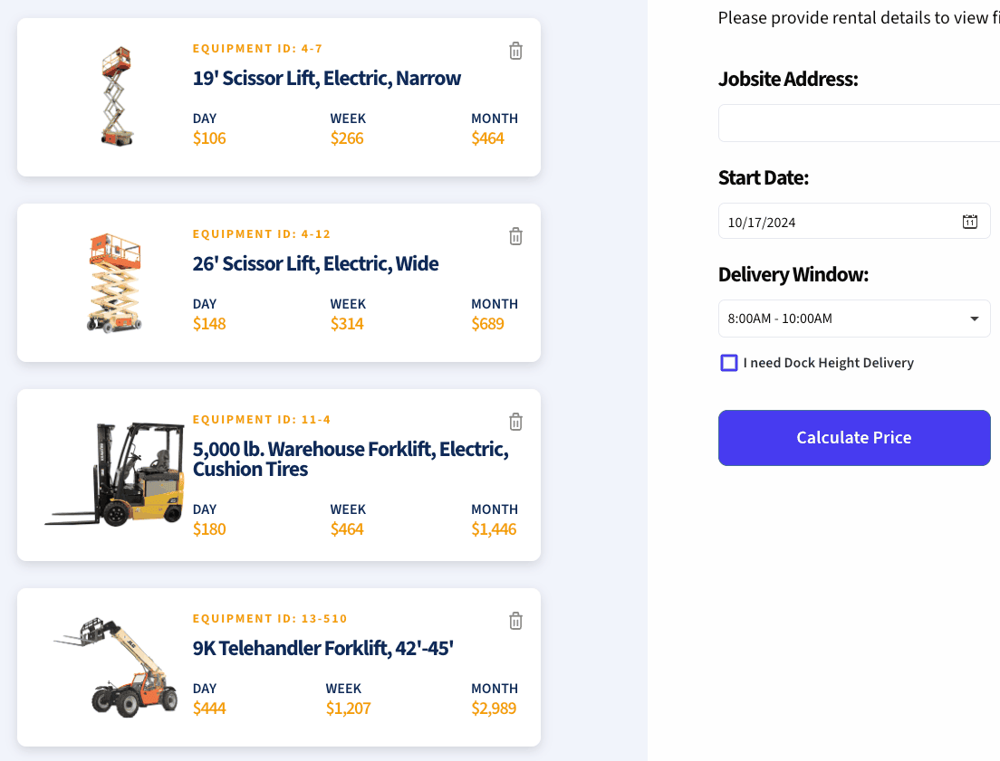
Equipment-rental market: \(r \approx \$106\)/day for a 19′ scissor lift; \(\$1{,}207\)/week for a 9K telehandler.
The point. The firm doesn't choose \(w\) or \(r\) — markets do. The firm chooses how much \(K\) and \(L\) to use given those prices. Today we combine these market-set input prices with the technology-set marginal products to find the cost-minimizing recipe (\(\text{MRTS}_{LK} = w/r\)).
The Firm's Cost-Minimization Problem — Isocost Lines
An isocost line shows all input combinations that yield the same cost — the producer-side analog of the consumer's budget line.
\[ C \;=\; R\,K \;+\; W\,L \]
\(C\) = total cost · \(R\) = rental rate of capital · \(W\) = wage rate
Three bundles at \(C = \$50\) · \(W = \$10\), \(R = \$20\)
\((L,K) = (5,0),\;(3,1),\;(1,2)\) — same cost, different recipes.
\[ K \;=\; \frac{C}{R} \;-\; \frac{W}{R}\,L \]
Solve for \(K\): intercept \(C/R\), slope \(-W/R\).
Same slope, higher \(C\): \$80 and \$100 shift the line out in parallel; \(W/R\) has not changed.
Pick the lowest isocost that still reaches the isoquant \(f(K,L)=q\): that is the cost-minimizing mix.
The Firm's Cost-Minimization Problem
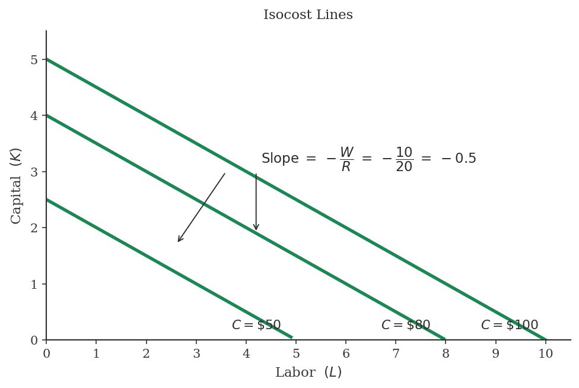
All same slope
slope \(= -W/R = -0.5\)
Parallel & outward
higher \(C\) ⇒ line shifts outward
Pick the lowest
that still hits \(f(K,L)=q\)
Three isocost lines for \(W=\$10\), \(R=\$20\): same slope, different \(C\). The firm wants the lowest isocost that still touches the production isoquant — that point is the cost-minimizing input mix.
§8.2 The Cost-Minimization Problem
isocost lines · tangency · equimarginal principle
Identifying Minimum Cost — A Graphical Approach
A Graphical Approach
- Isocost lines represent how much each set of inputs costs.
- Isoquants represent the production function and show the levels of inputs necessary to achieve a given level of output.
- The firm's objective is to produce \(\bar Q\) at the lowest cost possible.
- The lowest cost is on the isocost line closest to the origin.
- This occurs where the isocost line is tangent to the isoquant — at point \(B\).
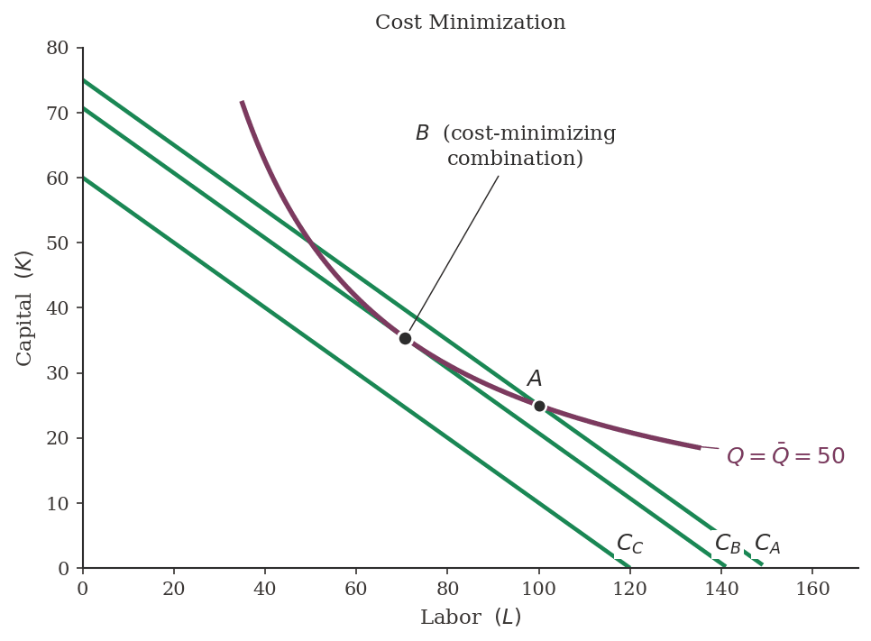
\(C_C\) sits below the isoquant — cheap, but doesn't produce enough output. \(C_A\) is feasible at point \(A\) but more expensive than necessary. \(C_B\) is the lowest isocost that still touches the isoquant — the tangency point \(B\) is the cost-minimizing combination.
Firms minimise cost subject to a given output — a constrained minimisation, exactly like the consumer's constrained maximisation.
Application — The Apple-1 at the Byte Shop, 1976
A month after founding the company, Jobs and Wozniak demoed the “Apple Computer A” at the Homebrew Computer Club. Paul Terrell of The Byte Shop ordered 50 fully assembled units at \$500 each, cash on delivery.
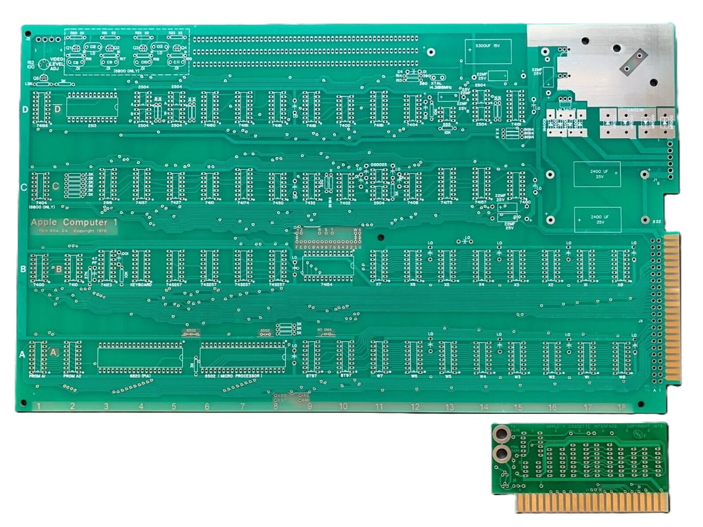
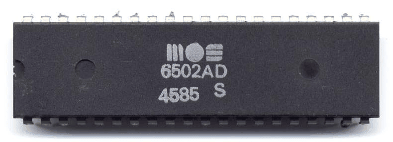
INPUTS \(K\)
PCB + chips
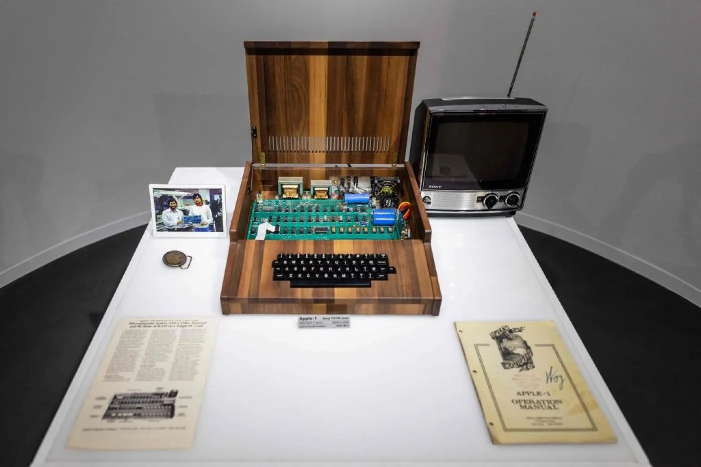
OUTPUT \(q = 50\)
TR = \$500 × 50 = \$25,000
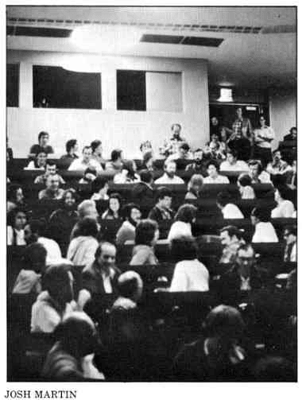
Homebrew Computer Club — July 1976. Photo: Josh Martin
The production target
\(q = 50\) Apple-1 boards — fixed by the order. The question: how to deliver 50 boards at the lowest total cost?
The input choice
\(L\) = Wozniak's hand-soldering hours. \(K\) = workbench tools, IC tester, PCB substrate. The recipe was extremely labor-intensive.
The textbook problem. Pick \((K, L)\) on the \(q = 50\) isoquant that minimizes \(W L + R K\). Geometrically, slide the isocost line down until it just touches the isoquant — that tangency point is the cost-min recipe.
Wozniak hand-soldered ~5 boards/week. Cost-min picks the labor-vs-capital recipe that hits the 50-board order at the lowest total spend.
Numerical Example — Same Isoquant, Different Input Prices
Target the same isoquant \(\bar Q = 50\) with Cobb-Douglas \(Q = \sqrt{K\cdot L}\) (so \(K L = 2{,}500\)). Closed-form cost-min:
\( L^* = 50\,\sqrt{R/W}, \quad K^* = 50\,\sqrt{W/R}, \quad C^* = 100\,\sqrt{W\cdot R} \)
Where \(L^*\) and \(K^*\) come from — 4 steps
1 · Tangency
\(MRTS = \dfrac{MP_L}{MP_K} = \dfrac{K}{L} = \dfrac{W}{R}\)
⇒ \(K = (W/R)\,L\)
2 · Stay on the isoquant
\(\sqrt{KL} = 50\)
⇒ \(KL = 2{,}500\)
3 · Substitute 1 into 2
\((W/R)L^2 = 2{,}500\)
⇒ \(L^* = 50\sqrt{R/W},\; K^* = 50\sqrt{W/R}\)
4 · Add up the bill
\(C^* = WL^* + RK^*\)
⇒ \(C^* = 100\sqrt{WR}\)
Case A — baseline
\(W = \$10\), \(R = \$20\)
slope \(-W/R = -0.5\); \(K/L = 0.5\)
- \(L^* = 50\sqrt{2} \approx \mathbf{70.7}\)
- \(K^* = 50/\sqrt{2} \approx \mathbf{35.4}\)
- \(C^* = 10\cdot 70.7 + 20\cdot 35.4 = \mathbf{\$1{,}414}\)
Case B — wage doubles
\(W = \$20\), \(R = \$20\)
slope \(-W/R = -1\); \(K/L = 1\)
- \(L^* = \mathbf{50}\)
- \(K^* = \mathbf{50}\)
- \(C^* = 20\cdot 50 + 20\cdot 50 = \mathbf{\$2{,}000}\)
Case C — cheap labor
\(W = \$5\), \(R = \$20\)
slope \(-W/R = -0.25\); \(K/L = 0.25\)
- \(L^* = \mathbf{100}\)
- \(K^* = \mathbf{25}\)
- \(C^* = 5\cdot 100 + 20\cdot 25 = \mathbf{\$1{,}000}\)
Takeaway. Same output (\(\bar Q = 50\)), different input prices ⇒ different cost-min recipe AND different total cost. As the wage rises (C→A→B), the firm shifts toward more capital, less labor, and total cost climbs from \(\$1{,}000 \to \$1{,}414 \to \$2{,}000\).
Input Price Changes — Rotating the Isocost Line
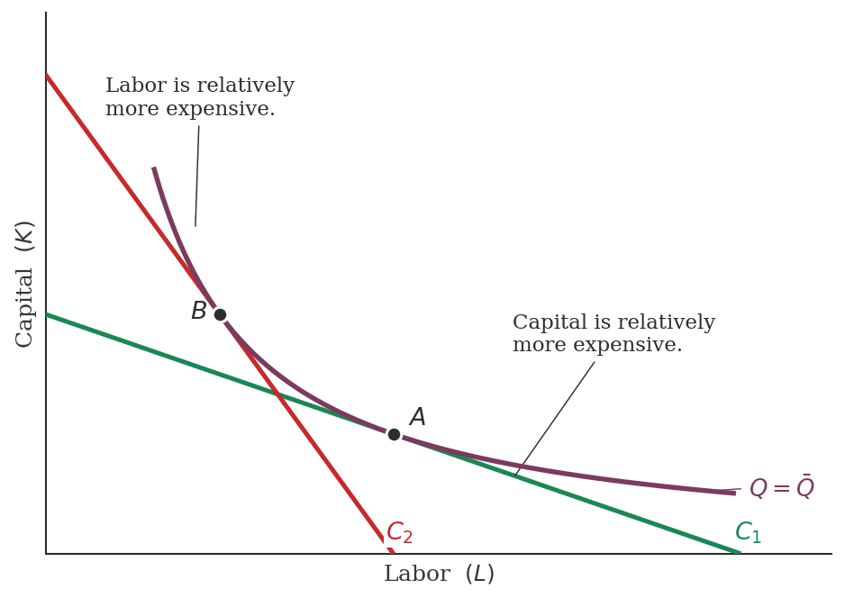
Capital is relatively more expensive
\(R\) rises (or \(W\) falls) ⇒ isocost line gets flatter (slope \(-W/R\) shrinks). Tangency slides DOWN-RIGHT to point \(A\) — more labor, less capital.
Labor is relatively more expensive
\(W\) rises (or \(R\) falls) ⇒ isocost line gets steeper (slope \(-W/R\) grows). Tangency slides UP-LEFT to point \(B\) — more capital, less labor.
Same output \(\bar Q\), same isoquant. Only the price ratio changes — and the cost-min recipe rotates around the isoquant.
Take-home. The cost-min input mix is a response to prices. As the wage rises, the firm substitutes away from labor and toward capital — sliding along the same isoquant to a new tangency. Exactly the wage-shock comparative statics the UAW story (§8.1) sets up: \(W \uparrow \Rightarrow K^*/L^* \uparrow\).
When to rebalance: cost is minimised where \(MP_K/r = MP_L/w\). If one input's marginal product per dollar is higher, shift spending toward it until the two are equal.
Production Technologies — labor-intensive vs. capital-intensive
LABOR-INTENSIVE
Heavy labor inputs
Pizza shop, salons, custom tailoring
MIXED — 1 : 1
Balanced labor & capital
Rideshare, dentistry, contracting
CAPITAL-INTENSIVE
Heavy capital inputs
Robotic warehouses, semiconductor fabs, oil refineries
Same final good can be produced in many ways. The production technology a firm picks — how much labor vs. how much capital — depends on input prices and the available recipe.
Apple in 1976: pure labor-intensive (Jobs & Wozniak in a garage). Apple in 2026: heavily capital-intensive (TSMC fabs assemble the chips). Same firm, very different K/L mix.
Cobb-Douglas Form — Tangency & Equimarginal in Closed Form
Tangency — geometric
For \(f(K, L) = A K^\alpha L^\beta\):
\(MP_L = \beta\dfrac{Q}{L}, \quad MP_K = \alpha\dfrac{Q}{K}\)
\(\text{MRTS}_{LK} = \dfrac{MP_L}{MP_K} = \dfrac{\beta}{\alpha}\cdot\dfrac{K}{L}\)
Set \(\text{MRTS} = \dfrac{w}{r}\) and solve:
\(\boxed{\;\dfrac{K^*}{L^*} = \dfrac{\alpha}{\beta}\cdot\dfrac{w}{r}\;}\)
Equimarginal — algebraic
Same condition, rewritten as "output per dollar equal across inputs":
\(\dfrac{MP_L}{w} = \dfrac{MP_K}{r}\)
\(\dfrac{\beta\,Q/L}{w} = \dfrac{\alpha\,Q/K}{r}\)
Cancel \(Q\), cross-multiply:
\(\boxed{\;\beta\, r\, K^* = \alpha\, w\, L^*\;}\)
Same as the boxed result on the left — just rearranged.
Gigafactory plug-in
\(\alpha = 0.4,\;\beta = 0.6,\;A = 8\), \(w = 0.10,\;r = 0.13\)
\(\dfrac{K^*}{L^*} = \dfrac{0.4}{0.6}\cdot\dfrac{0.10}{0.13} = \mathbf{0.513}\)
Substitute \(K^* = 0.513\,L^*\) into \(8 K^{0.4} L^{0.6} = 32\):
\(8 \cdot 0.513^{0.4} \cdot L^* = 32 \;\Rightarrow\; L^* = \dfrac{32}{6.128} = \mathbf{5.22}\)
\(L^* = \mathbf{5.22}\) thousand workers
\(K^* = 0.513 \cdot 5.22 = \mathbf{2.68}\) B\$
Exact match with Walkthrough 8.1 ✓
For Cobb-Douglas, the cost-min input ratio is purely structural: just the exponent ratio \(\alpha/\beta\) times the price ratio \(w/r\). The output level \(q\) just rescales \((K, L)\) along this ray.
Geometrically this is just tangency: the isocost slope \(-w/r\) equals the isoquant slope \(-MRTS\), so \(MRTS = w/r\) at the optimum.
§8.3 Tangency at the Gigafactory
the cost-min bundle · why the installed plant is off it
Tangency at the Gigafactory — \(Q = 32\) GWh
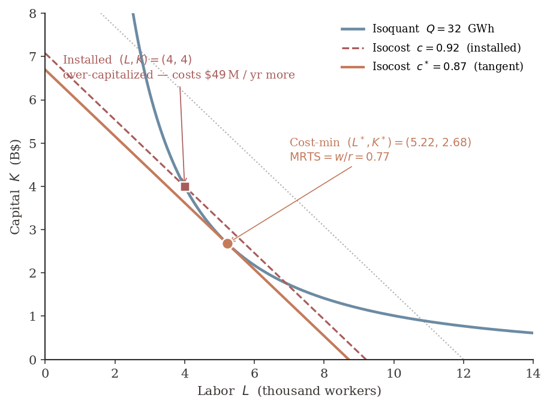
Cost-min bundle:
\((L^*, K^*) = (5.22, \; 2.68)\)
\(c^* = \$0.87\) B/yr
The installed bundle isn't cost-min!
Ch 7's gigafactory anchor \((K, L) = (4, 4)\) sits on the higher dashed isocost: \(c = 0.92\) B/yr — \(\$49\) M / yr above the optimum.
The plant is over-capitalized: it runs 49% more capital and 23% less labor than the cost-min levels at today's input prices.
Why the Firm's Bundle Isn't Always Cost-Minimizing
Capital is sunk
The cell-stacking lines, drying ovens, and assembly robots are bolted to the floor. They depreciate over 7–15 years. You can't — without huge write-downs — rip them out when prices change.
Bundles reflect past prices
The installed (K, L) reflects the prices that prevailed when the bundle was chosen. The 2018 capital-labor ratio was set by 2018 prices — not by 2024 prices.
Cost minimization is a target, not a description. The chapter's machinery tells you what the firm should do at current prices. The firm's actual bundle may differ by a substantial amount — and the wedge between them is real economic waste, gradually closed as old equipment depreciates and new investment can be re-optimized.
Forward-pointer: §8.7 (SR vs LR) will make this concrete — the gigafactory sits on its SR cost curve, which lies above the LR envelope.
§8.4 The Cost Function
Cobb-Douglas closed form · conditional input demands · comparative statics
Cost Function & Conditional Input Demands
Cost function
\[ c(w, r, q) \;=\; \min_{K, L} \,(w L + r K) \;\; \text{s.t.} \;\; f(K, L) = q \]
The minimum total spending required to produce \(q\) units of output at input prices \(w, r\). Function of three arguments: two prices and a quantity.
Conditional input demands
\[ L^*(w, r, q), \quad K^*(w, r, q) \]
The cost-minimizing input bundle conditional on producing exactly \(q\). Found from tangency plus the output target. Distinguishes from unconditional input demand (Ch 9) where \(q\) is also a choice variable.
Three properties to know. The cost function is (i) non-decreasing in each price, (ii) non-decreasing in \(q\), and (iii) concave in each input price — doubling a price less-than-doubles cost because the firm substitutes away. We'll prove (iii) graphically in §8.6 (Shephard).
The Cobb-Douglas Cost Function — Where It Comes From
Start from the cost-min problem for \(f(K, L) = A K^{\alpha} L^{\beta}\): minimize \(wL + rK\) subject to \(A K^{\alpha} L^{\beta} = q\). Four steps get you the whole cost function.
Step 1 — Tangency
With \(MP_L = \beta q/L\) and \(MP_K = \alpha q/K\):
\(\dfrac{MP_L}{MP_K} = \dfrac{\beta K}{\alpha L} = \dfrac{w}{r} \;\Longrightarrow\; K = \dfrac{\alpha}{\beta}\dfrac{w}{r}\,L\)
Step 2 — Impose the output target
Substitute that \(K\) into \(A K^{\alpha} L^{\beta} = q\):
\(A\left(\dfrac{\alpha w}{\beta r}\right)^{\!\alpha} L^{\alpha+\beta} = q\)
Step 3 — Solve for the input demands
Only \(L\) is left, so solve — then back out \(K^*\) from Step 1:
\(L^* = \left(\dfrac{q}{A}\right)^{\!\frac{1}{\alpha+\beta}}\!\left(\dfrac{\beta r}{\alpha w}\right)^{\!\frac{\alpha}{\alpha+\beta}}\)
Step 4 — Add up the bill
Plug \(L^*, K^*\) into \(c = wL^* + rK^*\) and collect terms:
both pieces share \(\left(\tfrac{q}{A}\right)^{\frac{1}{\alpha+\beta}} w^{\frac{\beta}{\alpha+\beta}} r^{\frac{\alpha}{\alpha+\beta}}\)
\(c(w, r, q) = (\alpha + \beta)\left(\dfrac{q}{A}\right)^{\!1/(\alpha+\beta)} \!\left(\dfrac{w}{\beta}\right)^{\!\beta/(\alpha+\beta)} \!\left(\dfrac{r}{\alpha}\right)^{\!\alpha/(\alpha+\beta)}\)
Under CRS (\(\alpha+\beta=1\)) this collapses to \(c(q) = \left(\tfrac{w}{\beta}\right)^{\beta}\left(\tfrac{r}{\alpha}\right)^{\alpha}\tfrac{q}{A}\) — linear in \(q\). Walkthrough 8.1 runs the gigafactory numbers through exactly these four steps.
What this formula actually tells you (3 ideas):
1. Returns to scale → cost shape
CRS (\(\alpha+\beta=1\)): cost is linear in \(q\).
DRS: cost rises faster than \(q\) (convex).
IRS: cost rises slower (concave).
2. Cost shares = exponents
\(\dfrac{wL^*}{c} = \beta,\;\dfrac{rK^*}{c} = \alpha\). Gigafactory labor share = 0.6 = \(\beta\), capital share = 0.4 = \(\alpha\) — regardless of prices.
3. Only \(w/r\) matters
Double both prices ⇒ cost doubles, but the input mix \((K^*, L^*)\) is unchanged. Only the ratio \(w/r\) drives the mix.
Walkthrough 8.1 — Cost-Min at the Gigafactory
Problem. Gigafactory technology \(Q = 8 K^{0.4} L^{0.6}\), locked prices \(w = 0.10\) B\$/(K-worker·yr), \(r = 0.13\)/yr. Output target \(q = 32\) GWh/yr. Find \((K^*, L^*)\), \(c^*\), and verify the cost shares.
(a) Tangency
\(\dfrac{w}{r} = \dfrac{\beta}{\alpha} \cdot \dfrac{K}{L} \;\Rightarrow\; \dfrac{K^*}{L^*} = \dfrac{\alpha w}{\beta r} = \dfrac{0.4 \cdot 0.10}{0.6 \cdot 0.13} = \mathbf{0.5128}\)
(b) Output constraint. Substitute \(K^* = 0.5128\, L^*\):
\(8 (0.5128 L^*)^{0.4} (L^*)^{0.6} = 32 \;\Rightarrow\; 8 \cdot 0.7656 \cdot L^* = 32\)
\(\;\Rightarrow\; \mathbf{L^* = 5.224}\) thousand workers, \(\mathbf{K^* = 2.679}\) B\$
(c) Total cost & cost shares
\(c^* = wL^* + rK^* = 0.1 \cdot 5.224 + 0.13 \cdot 2.679\)
\(\;= 0.5224 + 0.3483 = \mathbf{0.8707}\) B\$/yr
Labor share: \(wL^*/c^* = 0.5224/0.8707 = \mathbf{0.600 = \beta}\) ✓
Capital share: \(rK^*/c^* = 0.3483/0.8707 = \mathbf{0.400 = \alpha}\) ✓
Compare to installed bundle (Ch 7). At \((K, L) = (4, 4)\), cost \(= 0.92\) B/yr — \$49 M/yr above the optimum. The plant is over-capitalized: it runs 49% more capital and 23% less labor than the cost-min levels. Sunk capital, not bad management.
A 20% Wage Shock — Rotating to a New Optimum
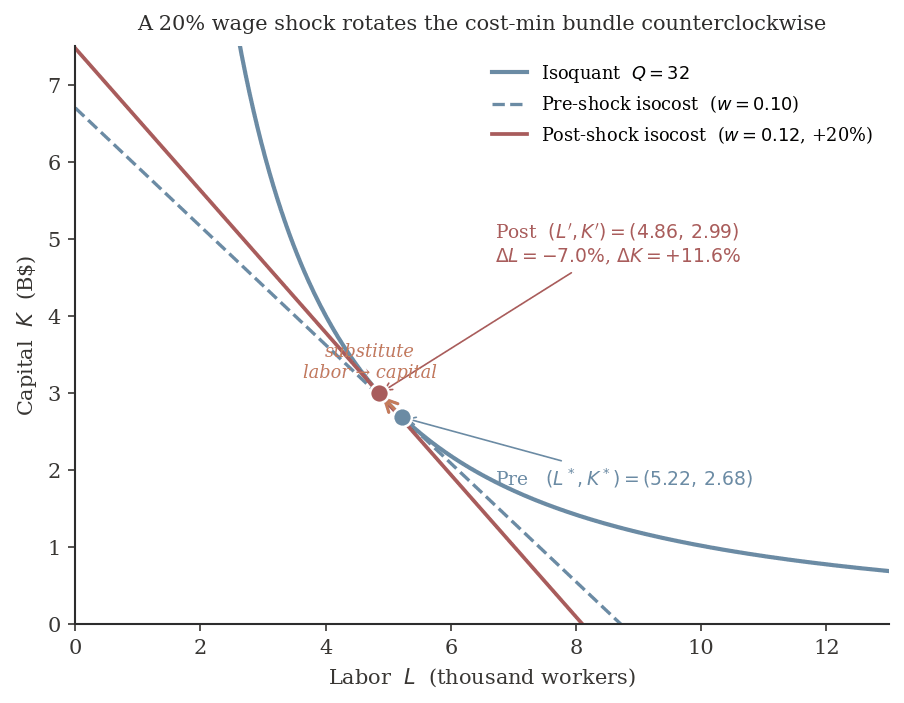
Why a wage hike? — back to the UAW spillover
Autumn 2023: the UAW won 25% raises at Ford / GM / Stellantis, and non-union Tesla Nevada followed with ~10% (\$45 → \$50/hr, fully loaded). We size the next round at twice that: \$50 → \$60/hr, +20%. Output stays at q = 32 GWh. How does the firm re-mix \(K, L\), and how much does cost rise?
Closed form (CRS Cobb-Douglas) FYI
\( L^* \propto w^{-\alpha} \quad K^* \propto w^{\beta} \quad c^* \propto w^{\beta}\)
−7%
\(\Delta L^*\)
(1.2−0.4−1)
+11.6%
\(\Delta K^*\)
(1.20.6−1)
+11.6%
\(\Delta c^*\)
(1.20.6−1)
Walkthrough 8.2 — Tesla Nevada Wage Shock
Problem & Set up. From W8.1's optimum \((K^*, L^*, c^*) = (2.679,\,5.224,\,0.8707)\), the UAW spillover pushes \(w = 0.10 \to w' = 0.12\) (+20%). \(r = 0.13\) and \(q = 32\) unchanged. Find the new \((K', L', c')\) and verify the closed-form elasticities.
Solve — new optimum
-
Step 1. Tangency gives a ratio (not \(K'\) directly):
\(\dfrac{K'}{L'} = \dfrac{\alpha\,w'}{\beta\,r} = \dfrac{0.4 \cdot 0.12}{0.6 \cdot 0.13} = \mathbf{0.6154}\)
⇒ \(\;K' = 0.6154\,L'\) (plug this into the isoquant) -
Step 2. Substitute \(K' = 0.6154\,L'\) into \(Q = 8 K'^{0.4} L'^{0.6} = 32\):
\(8 \cdot (0.6154\,L')^{0.4} \cdot L'^{0.6} = 32\)
\(8 \cdot 0.6154^{0.4} \cdot \underbrace{L'^{0.4} \cdot L'^{0.6}}_{=\,L'^{\,1}\,=\,L'} = 32\)
\(8 \cdot 0.8236 \cdot L' = 32 \;\Rightarrow\; 6.589 \cdot L' = 32\) -
Step 3. \(L' = 32 / 6.589 = \mathbf{4.857}\) (was 5.224)
\(K' = 0.6154 \cdot 4.857 = \mathbf{2.989}\) (was 2.679)
Solve — new cost + check
- Step 4. \(c' = 0.12 \cdot 4.857 + 0.13 \cdot 2.989 = \mathbf{0.9714}\) B\$/yr
- Check. \(\Delta L^* = -7.0\%\), \(\Delta K^* = +11.6\%\), \(\Delta c^* = +11.6\%\)
- Match closed-form. FYI Elasticity \(\%\Delta L^*/\%\Delta w = -\alpha = -0.4\) ⇒ \(1.2^{-0.4}-1 = -7.0\%\) ✓; \(\%\Delta c^*/\%\Delta w = \beta = 0.6\) ⇒ \(1.2^{0.6}-1 = +11.6\%\) ✓
Takeaway. 20% wage shock ⇒ 7% fewer workers, 11.6% more capital, total cost up only 11.6%. The firm absorbs the labor-share-weighted portion of the shock. A TSMC fab (labor share 17%, not 60%) would see cost rise only \(\sim 3.4\%\) — capital intensity insulates against wage shocks.
Application — Amazon Warehouses 2020–2025
The same algebra as Walkthrough 8.2, playing out at scale across the US warehouse industry. Both \(w\) is rising AND robotic-capital \(r\) is falling — the substitution is much sharper than the gigafactory's.
+47%
Starting wage 2020→2025 (\$15→\$22+/hr at coastal hubs)
1M
Robots deployed by Q3 2025 (vs ~1.5M human warehouse workers)
−35%
Sparrow picker unit cost since 2018 (\(r\) is falling)
\$32B
Q2 2025 capex (2× from two years earlier)
SHV1 Shreveport, LA
Amazon's newest-generation fulfillment center integrates Sequoia (inventory) + Sparrow (robotic-arm picker). Operates with 25% fewer workers than legacy facilities at the same throughput.
The textbook prediction
Cobb-Douglas: \(K^*/L^* \propto w/r\). When \(w/r\) doubles, the cost-min \(K/L\) ratio doubles. Amazon's actual K/L ratio roughly doubled 2020–2025 — exactly the comparative-statics prediction.
Same algebra, sharper substitution. The gigafactory absorbed a 20% wage shock with an 11.6% cost increase because labor is 60% of cost. Amazon faces a much steeper move because robotic capital is now both cheap and close-substitute to warehouse labor — so the substitution effect is large.
Amazon Warehouses — Old vs New Technology
Watch the input mix shift in real time: L-heavy manual picking (left) ⇒ K-heavy robotic automation (right).
Old — Manual Picking
Workers walk miles per shift, pull items off shelves.
Labor-intensive — high \(L\), low \(K\).
New — Robotic Automation
Sparrow + Sequoia bring inventory to a stationary station.
Capital-intensive — high \(K\), low \(L\).
Press ↑ to return to the application slide. The textbook prediction \(K^*/L^* \propto w/r\) is what you’re watching happen.
§8.5 Marginal & Average Cost
cost curves · the Lagrangian · \(\mu = MC\) · the envelope theorem
Before the Cost Curves — Where Sam Gets the Numbers
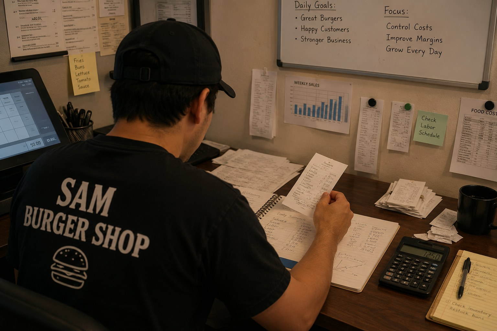
Closing the books — bank statements, supplier receipts, the labor schedule, and the POS report.
A cost curve doesn’t come from nowhere. Before Sam can draw one he has to go get the numbers — and every column of the table on the next slide traces back to a specific piece of paper.
Time clock
who clocked in & out, × hours
Wages
the labor bill \(\rightarrow wL\)
Bank stmt. + receipts
buns, patties, cheese, potatoes
Materials
scales with how much he cooks
Lease + equipment
storefront, grill, fryer
Rent
capital & land \(\rightarrow rK\)
POS report
tickets rung up that week
Burgers sold \(= Q\)
the output side of the table
That’s the whole table. Wages + Materials move with output ⇒ variable cost. Rent is owed whether Sam sells 0 burgers or 500 ⇒ fixed cost. The POS gives \(Q\). Sort the shoebox of receipts into those three bins, line them up by how many workers were on, and you have the next slide.
Burger Shop Full Inputs & Outputs Table
| Inputs | Outputs | |||||
| L | Wages | Materials | Rent | TP | \(AP_L\) | \(MP_L\) |
| 0 | \$0 | \$0 | \$26 | 0 | — | — |
| 1 | \$15 | \$2 | \$26 | 20 | 20.0 | 20 |
| 2 | \$30 | \$5 | \$26 | 50 | 25.0 | 30 |
| 3 | \$45 | \$9 | \$26 | 90 | 30.0 | 40 |
| 4 | \$60 | \$12 | \$26 | 120 | 30.0 | 30 |
| 5 | \$75 | \$14 | \$26 | 140 | 28.0 | 20 |
| 6 | \$90 | \$15 | \$26 | 120 | 20.0 | −20 |
| VC | VC | FC | Q | |||
Marginal Product & Average Product
MP = AP = 30 at L = 4 — crossing is at the AP peak.
Two identities for §8.4. (1) \(MP_L > AP_L \Rightarrow AP_L\) rising; \(MP_L = AP_L\) at the AP peak. (2) Wages + Materials = VC and Rent = FC — these labels feed straight into the cost function we're about to build.
Where this is heading. To understand marginal cost we have to crack open the company’s books and break costs apart at every output level: how much is locked in capital \(K\) (fixed: rent, lease, insurance) versus how much scales with labor \(L\) (variable: wages, materials). Only with that breakdown can we see what each additional unit of \(Q\) actually costs — and the next two slides do exactly that for the burger shop.
Production Function to Costs
| Inputs | Outputs | Costs | |||||
| Labor | Wages | Materials | Rent | Q | FC | VC | TC |
| 0 | 0 | 0 | \$26 | 0 | \$26 | 0 | \$26 |
| 1 | 15 | 2 | \$26 | 20 | \$26 | 17 | \$43 |
| 2 | 30 | 5 | \$26 | 50 | \$26 | 35 | \$61 |
| 3 | 45 | 9 | \$26 | 90 | \$26 | 54 | \$80 |
| 4 | 60 | 12 | \$26 | 120 | \$26 | 72 | \$98 |
| 5 | 75 | 14 | \$26 | 140 | \$26 | 89 | \$115 |
| 6 | 90 | 15 | \$26 | 150 | \$26 | 105 | \$131 |
| 7 | 105 | 15.5 | \$26 | 155 | \$26 | 120.5 | \$147 |
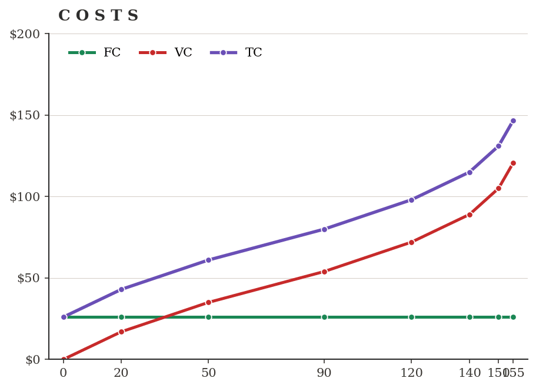
Costs of production are determined by the productivity of workers.
Fixed costs (FC)
Horizontal — do not vary with output.
Variable costs (VC)
Change with output; the VC curve is not constant.
Total cost (TC)
\(TC = FC + VC\) — same shape as VC, shifted up by FC.
Costs That Matter — MC, AVC, ATC, AFC
| Outputs | Costs | MC | Averages | ||||||
| Q | FC | VC | TC | ΔTC | ΔQ | MC = ΔTC/ΔQ | AVC | ATC | AFC |
| 0 | \$26 | 0 | \$26 | — | — | — | — | — | — |
| 20 | \$26 | 17 | \$43 | \$17 | 20 | \$0.85 | \$0.85 | \$2.15 | \$1.30 |
| 50 | \$26 | 35 | \$61 | \$18 | 30 | \$0.60 | \$0.70 | \$1.22 | \$0.52 |
| 90 | \$26 | 54 | \$80 | \$19 | 40 | \$0.48 | \$0.60 | \$0.89 | \$0.29 |
| 120 | \$26 | 72 | \$98 | \$18 | 30 | \$0.60 | \$0.60 | \$0.82 | \$0.22 |
| 140 | \$26 | 89 | \$115 | \$17 | 20 | \$0.85 | \$0.64 | \$0.82 | \$0.19 |
| 150 | \$26 | 105 | \$131 | \$16 | 10 | \$1.60 | \$0.70 | \$0.87 | \$0.17 |
| 155 | \$26 | 120.5 | \$147 | \$16 | 5 | \$3.10 | \$0.78 | \$0.95 | \$0.17 |
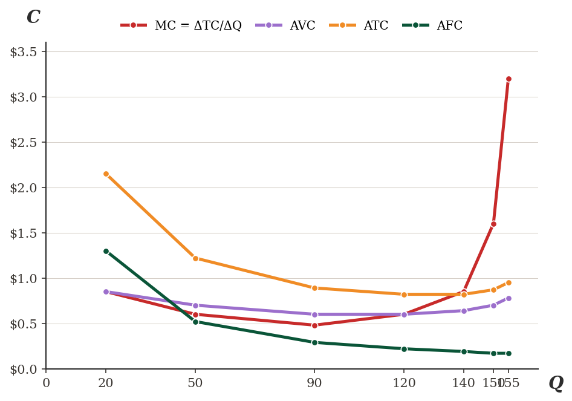
Marginal cost (MC)
Change in total cost from one more unit, \(MC = \Delta TC/\Delta Q\). U-shaped, from diminishing marginal returns.
Average variable cost (AVC)
\(VC/Q\). Falls then rises (U-shape). Crosses \(MC\) at \(AVC\)’s minimum.
Average total cost (ATC)
\(TC/Q = AVC + AFC\). Also U-shaped; crosses \(MC\) at \(ATC\)’s minimum.
Average fixed cost (AFC)
\(FC/Q\). Monotonically declines — fixed cost spread over more units.
Average and Marginal Costs — Relationships
Relationships between average and marginal costs
Why MC ignores fixed cost
Since fixed costs do not change when a firm expands output, marginal cost depends only on variable cost.
\[ MC \;=\; \dfrac{\Delta TC}{\Delta Q} \;=\; \dfrac{\Delta VC}{\Delta Q} \]
What happens when marginal cost is less than average total cost?
For example, consider your overall GPA. What happens to your 3.0 average when you get a 2.5 for the semester?
⇒ It drops below 3.0.
GPA
3.0 ↓
This semester
2.5
Average and Marginal Costs — The U-Shape
The pull of the marginal unit
The same holds with costs: when marginal cost is below average total cost, producing another unit reduces average total cost — and vice versa.
Average total costs are minimized when \(\;ATC = MC\).
\(MC < ATC\): ATC falls · \(MC > ATC\): ATC rises
AVC + MC · cross at \(Q = 120\)

AVC is U-shaped; MC crosses it at its minimum.
ATC + MC · cross at \(Q = 140\)

ATC = AVC + AFC: also a U, crossed by MC at its minimum, further right.
AFC · always falling
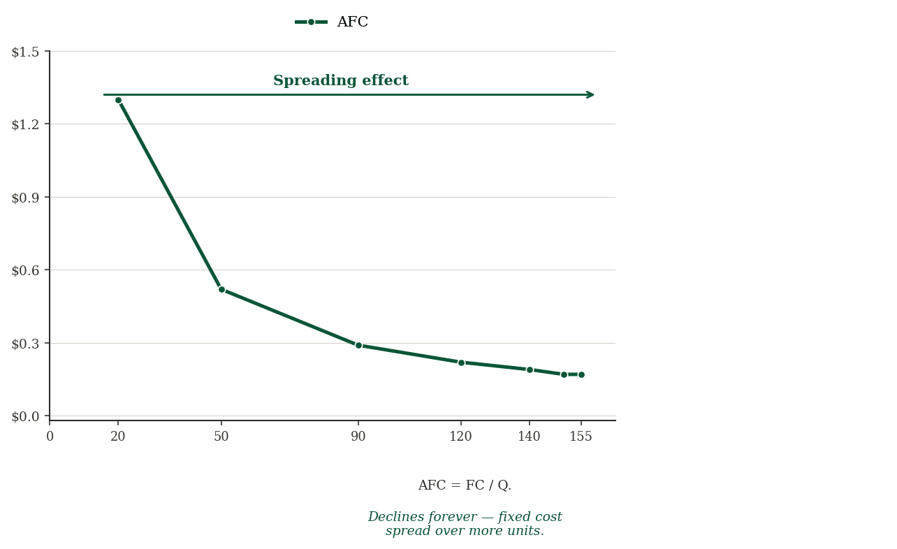
AFC = FC/Q: fixed cost spread over more units, forever.
A tug of war: spreading the rent pulls ATC down; crowding the kitchen pushes it up. That is the “U”.
Average and Marginal Costs — Three Curves, Step by Step
AVC + MC · crossing at \(Q = 120\)
ATC + MC · crossing at \(Q = 140\)
AFC · monotonically declining
AVC is U-shaped. MC crosses AVC at its minimum.
ATC = AVC + AFC. Also U-shaped. MC crosses ATC at its minimum (further right than AVC's).
AFC = FC/Q. Monotonically declines — fixed cost spread over more units.
Average and Marginal Costs — The GPA Analogy
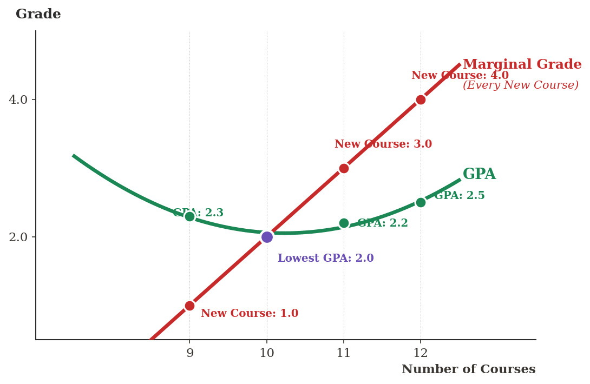
GPA ↔ Average Cost
Cumulative GPA is your average grade across all courses taken. As you take more courses, GPA reacts to each new course's grade.
New course's grade ↔ Marginal Cost
Each new course's grade is the marginal contribution. If it's below GPA, GPA falls. If above, GPA rises. They cross at GPA's minimum.
Same algebraic identity as \(MC = AC\) at \(AC\)'s minimum — just relabeled.
Marginal Cost & Average Cost
AC
—
MC
—
GAP = AC − MC
—
Definitions
\( MC = \dfrac{\partial c}{\partial q} \qquad AC = \dfrac{c}{q} \)
GPA analogy. AC is your cumulative GPA after \(q\) units; MC is the grade on the next unit. Above your GPA ⇒ GPA rises. Below ⇒ falls. They cross at the GPA minimum.
Algebra: \(\dfrac{d(c/q)}{dq} = \dfrac{MC - AC}{q}\) — so \(AC' \gtrless 0\) iff \(MC \gtrless AC\). The crossover at \(AC' = 0\) means \(MC = AC\) at \(AC\)'s minimum.
Drag the slider: the gap closes to zero exactly at \(AC\)’s minimum.
3D Printers and Manufacturing Cost
Modern 3D printers take Star Trek's “replicator” idea and make it real: feed plastic or metal, get a finished part. Cost structure: fixed cost for the printer + variable cost for the materials.
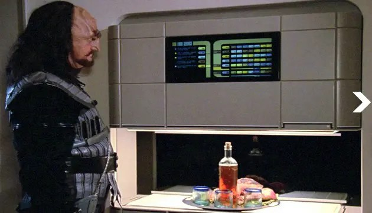
Star Trek “replicator”
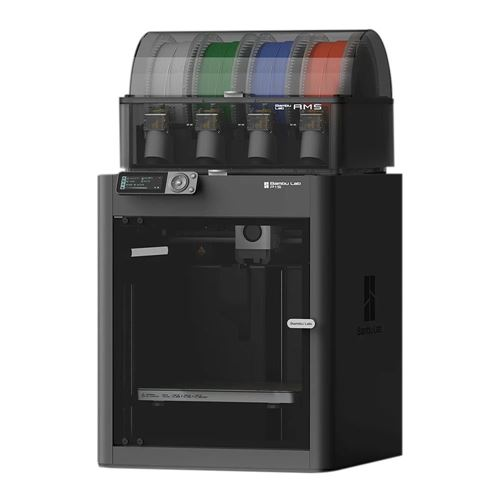
Modern 3D printer (Creality)
NOZZLE
SUNK COST
\$60
3D PRINTER
FIXED COST
\$299
FILAMENT
VARIABLE COST
\$10 / spool
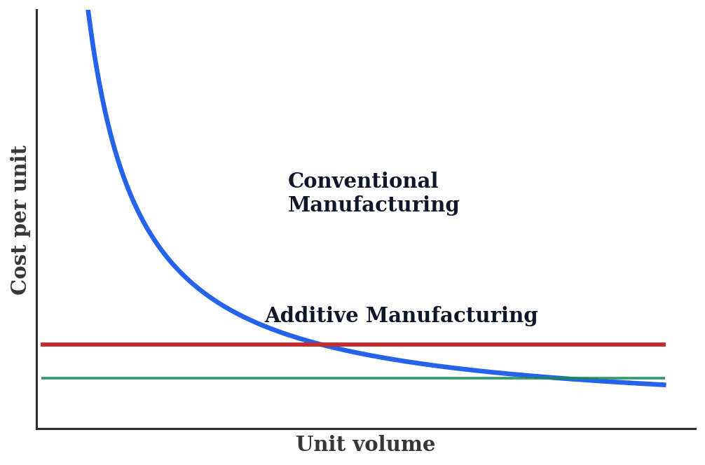
Where each wins. Conventional manufacturing has steep economies of scale — huge FC amortized over millions of units ⇒ very low AC at high volume. Additive (3D printing) has low FC but ~constant marginal cost ⇒ flat per-unit cost. Additive wins at low volumes (custom one-offs, prototypes); conventional wins at mass volume. Real-world frontier: The Economist (Aug 17, 2021) — "The rise of 3D-printed houses" — your next home could be a printout.
Setting Up the Lagrangian
New question: what does one more unit of output cost? Tie the bill to the output target with a multiplier \(\mu\) on \(q - f(K, L) = 0\):
\[ \mathcal{L}(K, L, \mu) \;=\; w L + r K + \mu \bigl(q - f(K, L)\bigr) \]
First-order conditions (at an interior optimum):
\(\partial \mathcal{L}/\partial L = 0\)
\(w = \mu \cdot MP_L\)
\(\partial \mathcal{L}/\partial K = 0\)
\(r = \mu \cdot MP_K\)
\(\partial \mathcal{L}/\partial \mu = 0\)
\(f(K, L) = q\)
Divide the first two: \(\;w/r = MP_L/MP_K = \text{MRTS}_{LK}\) — the tangency. The third pins the solution to the isoquant.
What is \(\mu\)? The shadow value of the output constraint — the marginal cost of an extra unit of output. The next slide shows (via the envelope theorem) that \(\mu = \partial c/\partial q = MC\). The Lagrange multiplier is marginal cost.
The problem, once: a firm with technology \(f(K,L)\) faces input prices \(w\) and \(r\) and must deliver at least \(q\). It chooses the cheapest \((K,L)\) that does so — the mirror image of the Ch 5 consumer, minimising spend at fixed utility.
The Envelope Theorem — The Planner’s Problem
The setup. The gigafactory’s finance team is budgeting for next quarter. The output target rises from \(q = 32\) to \(q = 33\) GWh. What does that extra GWh cost — that is, what is \(\partial c/\partial q\)?
The hard way
When \(q\) rises, both \(K^*\) and \(L^*\) re-adjust: \(\;\partial c/\partial q = w\,\partial L^*/\partial q + r\,\partial K^*/\partial q\). Three derivatives, and you must know how the firm re-optimizes.
The envelope shortcut
At the optimum those adjustments cancel exactly, leaving only the multiplier: \(\;\partial c/\partial q = \mu\). One identity does the work of three derivatives.
Why they cancel — four steps
1 · Differentiate the bill
\(c = wL^* + rK^*\)
\(\Rightarrow \dfrac{\partial c}{\partial q} = w\dfrac{\partial L^*}{\partial q} + r\dfrac{\partial K^*}{\partial q}\)
2 · Use the FOCs
\(w = \mu f_L,\quad r = \mu f_K\)
\(\Rightarrow \mu\left(f_L\dfrac{\partial L^*}{\partial q} + f_K\dfrac{\partial K^*}{\partial q}\right)\)
3 · Differentiate the constraint
\(f(K^*, L^*) = q\) at every \(q\)
\(\Rightarrow f_L\dfrac{\partial L^*}{\partial q} + f_K\dfrac{\partial K^*}{\partial q} = 1\)
4 · Put them together
\(\dfrac{\partial c}{\partial q} = \mu \cdot 1\)
the whole bracket collapses to 1
\[ \boxed{\;\frac{\partial c}{\partial q} \;=\; \mu \;=\; MC\;} \]
The multiplier on the output constraint is marginal cost — no coincidence: \(\mu\) is the shadow price of one more unit of output, which is what \(MC\) means. Same mechanics as the consumer’s \(\lambda = \partial v/\partial I\) = marginal utility of income (Ch 5).
Walkthrough 8.3 — Is the Multiplier Really Marginal Cost?
Problem. At the gigafactory’s cost-minimising bundle, compute \(\mu\) from each of the two first-order conditions. Do they agree — and does that common value equal marginal cost?
Given — everything you need
Technology: \(Q = 8K^{0.4}L^{0.6}\) so \(\alpha = 0.4,\ \beta = 0.6\)
Prices: \(w = 0.10\), \(r = 0.13\) · Target: \(q = 32\)
From W8.1: \(L^* = 5.224\), \(K^* = 2.679\)
Formulas
Cobb-Douglas marginal products:
\(\qquad MP_L = \beta\dfrac{Q}{L}, \qquad MP_K = \alpha\dfrac{Q}{K}\)
The two FOCs:
\(\qquad w = \mu\,MP_L, \qquad r = \mu\,MP_K\)
so \(\;\mu = w/MP_L\;\) and \(\;\mu = r/MP_K\)
Solve
1 · Marginal products.
\(MP_L = 0.6\dfrac{32}{5.224} = \mathbf{3.675}\)
\(MP_K = 0.4\dfrac{32}{2.679} = \mathbf{4.777}\)
2 · \(\mu\) from the labour FOC.
\(\mu = \dfrac{w}{MP_L} = \dfrac{0.10}{3.675} = \mathbf{0.02721}\)
3 · \(\mu\) from the capital FOC.
\(\mu = \dfrac{r}{MP_K} = \dfrac{0.13}{4.777} = \mathbf{0.02721}\) ✓ same
Two different equations, one answer. Agreement is the signature of a genuine interior cost-minimum — it is the equimarginal condition \(MP_L/w = MP_K/r\) rearranged. And by the envelope theorem that shared value is marginal cost: \(\;\partial c/\partial q = \mu = \mathbf{0.02721}\) B\$/GWh.
Poll #1 — AC vs MC at the Gigafactory
At the gigafactory cost-min bundle, total cost \(c^* = 0.87\) B\$/yr at \(q = 32\) GWh. Under CRS Cobb-Douglas (\(\alpha + \beta = 1\)), what's the relationship between marginal cost and average cost at \(q = 32\)?
Press 1 for a 1-min timer; press ↓ for the solution.
Poll #1 — Answer: C) \(MC = AC\) everywhere
Under CRS, the cost function is linear in \(q\): \(c(q) = (w/\beta)^\beta(r/\alpha)^\alpha \cdot q / A\).
So \(MC = \partial c/\partial q\) is constant, and \(AC = c/q\) is the same constant.
Check it at the gigafactory — compute each one separately (\(q = 32\) GWh):
Marginal cost — the slope
\(MC = \dfrac{\partial c}{\partial q} = \left(\dfrac{w}{\beta}\right)^{\!\beta}\left(\dfrac{r}{\alpha}\right)^{\!\alpha}\dfrac{1}{A}\)
\(= \dfrac{(0.10/0.6)^{0.6}(0.13/0.4)^{0.4}}{8}\)
\(= 0.02721\) B\$/GWh
Average cost — the ratio
\(AC = \dfrac{c^*}{q}\) with \(c^* = wL^* + rK^*\)
\(= \dfrac{0.10(5.224) + 0.13(2.679)}{32} = \dfrac{0.8708}{32}\)
\(= 0.02721\) B\$/GWh
Two different calculations, one answer: \(MC = AC = 0.02721\) B\$/GWh \(\approx\) \$27.21/MWh — on average and at the margin. The U-shape returns only under DRS or IRS — or in the short run with fixed capital (§8.7).
How the class voted
§8.6 Shephard's Lemma & Duality
\(\partial c/\partial w = L^*\) · the four-corner duality square
Why Shephard's Lemma & Duality? — The Analyst's Problem
Switch chairs. So far we advised the plant from inside. Now you’re a Wall Street analyst covering Tesla from outside: you see aggregate numbers in public filings — operating cost, capex, wage indices — but not what’s inside the plant: workers per shift, or how it trades robots for labor when wages rise.
Observable
- Total operating cost \(c\) by quarter
- Input prices \(w\), \(r\) (BLS, BEA)
- Output \(q\) (factory delivery reports)
- Cost shape as prices move
NOT observable
- Internal \(K^*, L^*\) input choices
- The exact production function \(f(K, L)\)
- How the firm actually solved its Lagrangian
Shephard’s Lemma: if you have a model of \(c(w, r, q)\), just differentiate it:
\(\dfrac{\partial c}{\partial w} = L^*(w, r, q), \qquad \dfrac{\partial c}{\partial r} = K^*(w, r, q).\)
You recover the firm’s input choices from cost data alone — without re-solving the Lagrangian, without observing \(K\) and \(L\) directly.
The duality. The production function \(f(K, L)\) and the cost function \(c(w, r, q)\) are two equivalent descriptions of the same technology. From either one, all the empirical objects we care about — demands, marginal cost, factor shares, returns to scale — follow.
Shephard's Lemma
Apply the envelope theorem to the input-price arguments of the cost function:
\[ \frac{\partial c(w, r, q)}{\partial w} \;=\; L^*(w, r, q), \qquad \frac{\partial c(w, r, q)}{\partial r} \;=\; K^*(w, r, q). \]
Yes — this assumes the firm is already cost-minimizing. Every object here is an optimized one: \(c(w,r,q)\) is the minimized cost, and \(L^*, K^*\) are the conditional input demands — the cheapest way to hit \(q\). The proof replaces \(w\) by \(\mu f_L\) and \(r\) by \(\mu f_K\), which are the first-order conditions, so the identity holds only at the optimum. For a firm sitting off its cost-min bundle — like the installed \((K,L) = (4,4)\) gigafactory — \(\partial c/\partial w \neq L\).
Why it is true, in one line. Raise the wage by \$1 and the bill rises by \$1 for every hour of labor you employ — so the slope of cost in the wage is the workforce. The re-mixing that follows adds nothing at the margin: that is the envelope theorem again.
The empirical reach is enormous. From a fitted cost function, you can recover input demands by simple differentiation — no need to re-solve the Lagrangian.
Walkthrough 8.4 — Differentiate the Cost Function, Get Labour Back
Problem. Take the gigafactory’s cost function, differentiate it with respect to the wage, and check that the answer is exactly \(L^*\) — the labour the firm already chose.
Given — everything you need
Prices: \(w = 0.10\), \(r = 0.13\) · \(\alpha = 0.4,\ \beta = 0.6\)
From W8.1: \(L^* = 5.224\), \(K^* = 2.679\), \(c^* = 0.8708\)
The cost function
\(c(w,r,q) = \dfrac{q}{A}\left(\dfrac{w}{\beta}\right)^{\!\beta}\left(\dfrac{r}{\alpha}\right)^{\!\alpha}\)
Note \(w\) appears in one place only — the \((w/\beta)^{\beta}\) factor. That is what makes the derivative so clean.
Solve
1 · Differentiate in \(w\). Power rule on \(w^{\beta}\) brings down \(\beta/w\) and leaves the rest of \(c\) untouched:
\(\qquad \dfrac{\partial c}{\partial w} = \dfrac{\beta}{w}\,c\)
2 · Put the numbers in.
\(\qquad \dfrac{0.6}{0.10}(0.8708) = \mathbf{5.224} = L^*\) ✓
3 · Same move for capital.
\(\qquad \dfrac{\partial c}{\partial r} = \dfrac{\alpha}{r}\,c = \dfrac{0.4}{0.13}(0.8708) = \mathbf{2.679} = K^*\) ✓
Why it had to work. Under Cobb-Douglas the labour cost share is \(\beta\), so the wage bill is \(wL^* = \beta c\) — here \(0.10(5.224) = 0.6(0.8708) = 0.522\) exactly. Divide by \(w\) and you get \(L^* = \dfrac{\beta}{w}c\), which is precisely the derivative. Shephard’s lemma isn’t a coincidence — it’s the cost-share identity.
Takeaway. Fit a cost function to firm data, differentiate it, and you have the input demand at any prices — with no Lagrangian to re-solve. That is why the lemma is a workhorse of empirical IO.
How it all fits together — the duality map
The Ch 6 consumer map and the Ch 8 producer map, drawn as one picture — same arrows, same foundation.
![Duality map. A banner across the top states that both rows are one problem read two ways: minimize spending subject to hitting a target - the consumer minimizes p times x subject to utility equal to u-bar, the producer minimizes wL plus rK subject to f(K,L) equal to q. The upper row is the consumer, Chapter 6: the utility function u, a primitive describing preferences, leads by expenditure minimization to the expenditure function e(p, u-bar), the minimum spending needed to reach u-bar, which leads by Shephard's lemma - h equals the derivative of e with respect to price - to Hicksian compensated demand. The lower row is the producer, Chapter 8, and runs exactly parallel: the production function f(K,L), a primitive describing technology, leads by cost minimization to the cost function c(w,r,q), the minimum spending needed to make q, which leads by Shephard's lemma - L-star equals the derivative of c with respect to the wage - to the conditional input demands K-star and L-star. A dashed arrow runs back from the cost function to the production function, showing that c recovers f: they describe the same firm two ways. A banner across the bottom identifies the envelope theorem as the single result behind both Shephard arrows and behind the identity that the derivative of cost with respect to output equals mu equals marginal cost.](figures/fig-duality.png)
Only two things are primitive: \(u\) and \(f\). Every other box is recovered by solving a minimization and then differentiating — which is why the consumer and producer halves of this course are one theory, not two.
§8.7 Short Run vs Long Run
SR cost curves · LR envelope · the headline figure
Short Run vs Long Run — Definitions
Short run
Capital fixed at \(\bar K\); only labor adjusts. One-dimensional problem — the output constraint pins \(L\) uniquely.
\(c_{SR}(q; \bar K) = r \bar K + w \cdot L^*_{SR}(q; \bar K)\)
No Lagrangian, no tangency — just invert \(f(\bar K, L) = q\) for \(L\).
Long run
Both \(K\) and \(L\) adjust freely. Two-dimensional problem — tangency plus the output target, as in §8.2–8.4.
\(c_{LR}(q) = \min_{\bar K} c_{SR}(q; \bar K)\)
The lower envelope of the SR family — today's headline figure.
Work it once — the gigafactory at \(\bar K = 4\).
1 · Invert: \(8\cdot 4^{0.4}L^{0.6} = q \;\Rightarrow\; L = (q/13.93)^{5/3}\).
2 · Pay the bill: \(STC(q) = r\bar K + wL = 0.52 + 0.10\,(q/13.93)^{5/3}\) — short-run total cost, the \(c_{SR}\) above.
3 · Check at \(q = 32\): \(L = 4\), \(STC = 0.92\) B\$/yr — the installed plant. Short-run marginal cost is the slope, \(dSTC/dq\).
HeadsUp: short run isn't clock time. SR and LR are defined by which inputs are flexible, not by elapsed time. A semiconductor fab's short run can last five years (clean-room construction is glacial). A restaurant's short run is the lunch shift (table count fixed within the hour). A battery plant's short run is roughly a quarter (capital sunk; workforce adjustable). The institutional content is what's flexible, not how long.
Short-Run and Long-Run Cost Curves — SpaceX Raptor
We now analyze how the time horizon shapes the cost structure a firm faces. Remember: in the short run, the amount of capital is fixed.
Short-run production & total cost
A firm’s short-run total cost curve gives the total cost of producing each quantity of output when capital is fixed.
The case — Raptor engines
SpaceX builds Raptor engines for Starship at McGregor, TX. Within a quarter the high-bay floor space, CNC machining centres, test stands and supply-chain capex are fixed. Only one input adjusts fast: headcount — engineers and assembly technicians.
SpaceX Raptor — capital + labor produce rocket engines (quantities per week).
Short-Run and Long-Run Cost Curves — Capital + Labor → Engines
Capital and labor are used to produce engines (quantities per week). \(\bar K = 6\) is the SR capital stock.
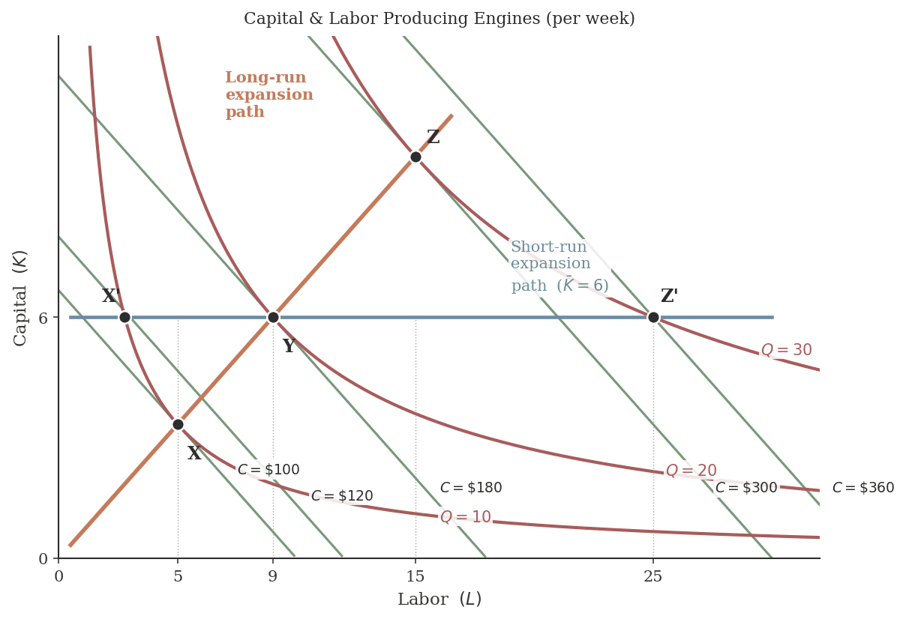
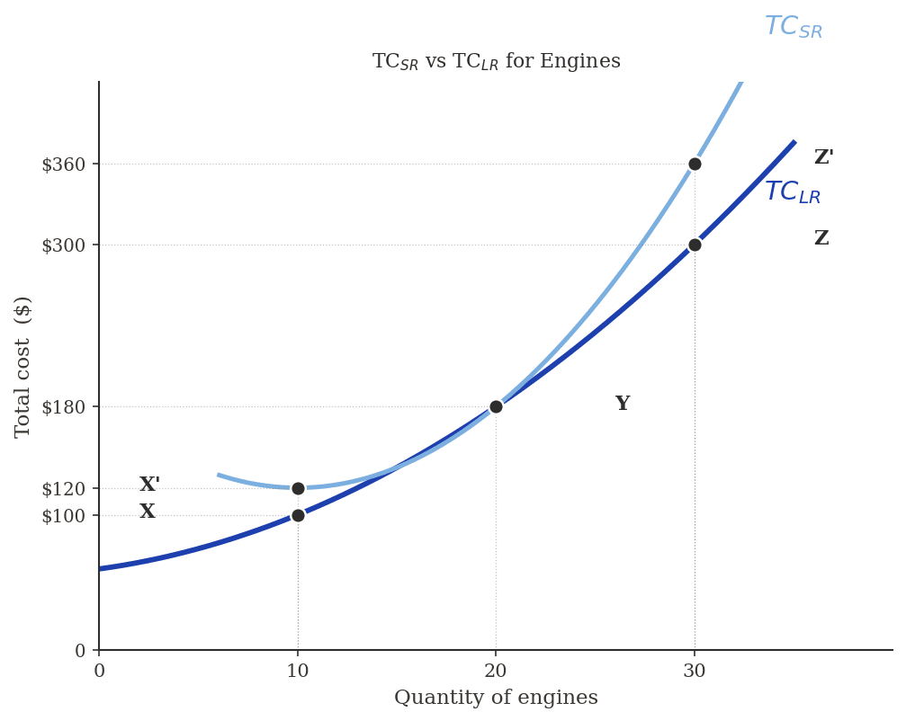
- Isoquants \(Q = 10, 20, 30\) and isocost lines (slope \(-w/r\)).
- LR expansion path (yellow) threads tangencies X, Y, Z.
- SR expansion path (blue) is horizontal at \(\bar K = 6\); SR points X', Z' use the wrong \(K\).
- Right panel: same outputs on TC. Y is the only \(Q\) where SR = LR cost; elsewhere SR sits above LR.
Short-Run vs Long-Run Average Total Cost Curves
The previous figure showed that the short-run total cost curve never falls below the long-run total cost curve.
What that implies
The short-run ATC curve never falls below the long-run ATC curve either — and this holds for every SR-ATC curve, each one corresponding to a different fixed capital level.
The long-run ATC curve envelops every short-run ATC curve from below.
Same algebra as TC: divide each by \(Q\). \(TC_{SR}\ge TC_{LR} \Rightarrow ATC_{SR}\ge ATC_{LR}\).
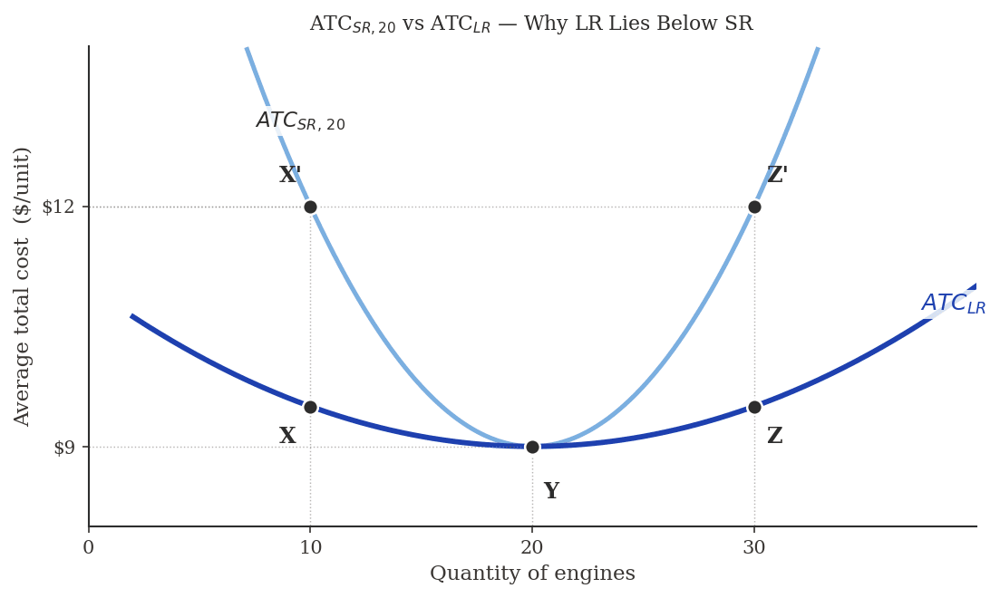
The LR-ATC Curve Envelops the SR-ATC Curves
The short run never costs less: \(TC_{SR}\ge TC_{LR}\) at every \(Q\). Divide by \(Q\): \(ATC_{SR}\ge ATC_{LR}\), for every fixed \(\bar K\). So the LR-ATC envelops the SR-ATCs from below.
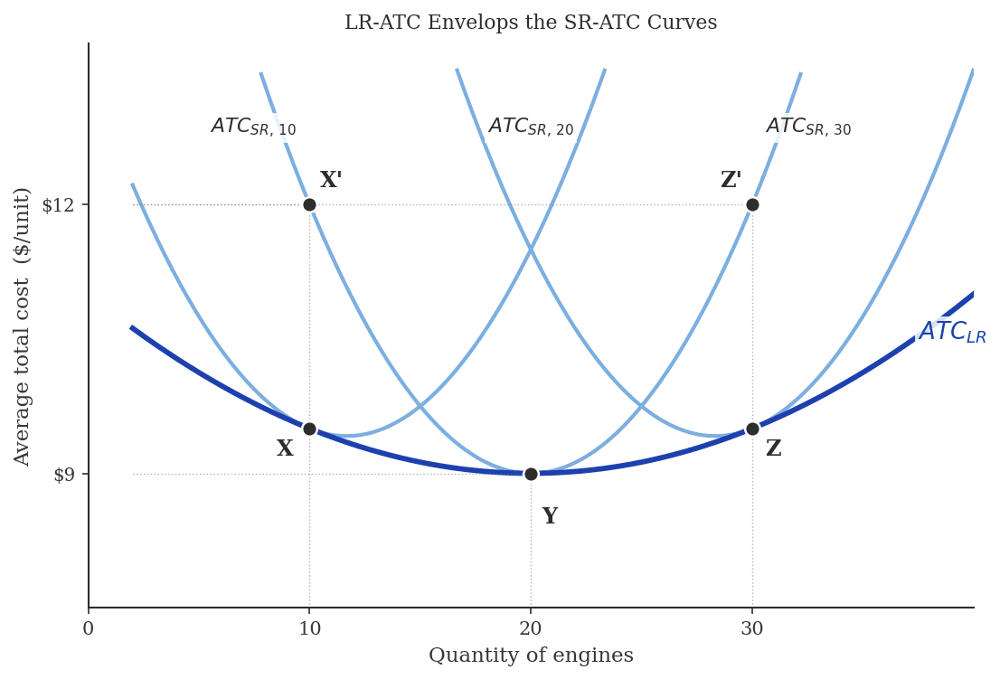
Reading the figure. Three SR-ATC curves, one for each fixed \(\bar K\). The LR-ATC sits below all of them, tangent to each at the \(Q\) where that \(\bar K\) is LR-optimal. Y (\(Q = 20\)) is the minimum of the LR envelope at \$9. The long run never costs more than the short run: it lets you fix the wrong \(\bar K\) (X', Z').
Short-Run vs Long-Run Marginal Cost Curves
Just as with average costs:
Short-run marginal cost
The cost of producing one more unit of output when capital is fixed.
Long-run marginal cost
The cost of producing one more unit when both capital and labor are variable.
What does this imply for the shape of the marginal cost curves?
In general, the long-run marginal cost curve will be flatter than the short-run marginal cost curve.
Intuition: in the SR, the firm absorbs all extra output by adding labor to a fixed \(\bar K\) — diminishing \(MP_L\) makes the next unit increasingly expensive. In the LR, the firm can also scale capital up, so MC rises more gently.
Long-Run and Short-Run Marginal Costs
SR-MC: one more unit with capital fixed. LR-MC: one more unit with both inputs free. Diminishing \(MP_L\) bites only in the short run, so \(MC_{LR}\) is flatter.
![Average cost and marginal cost vs quantity of engines. Light-blue U-shaped ATC_SR,10, ATC_SR,20, ATC_SR,30 curves sit above the dark-blue U-shaped ATC_LR envelope. Green U-shaped MC_SR,10, MC_SR,20, MC_SR,30 curves each rise steeply and cross the red MC_LR curve at Q = 10, 20, 30 respectively. Marked points X at (10, $9.5), Y at (20, $9) and Z at (30, $9.5) all sit on the ATC_LR curve. Each MC_SR curve crosses MC_LR at its own planning quantity of 10, 20 and 30, at a height above or below the marked ATC points; only at Q=20 do the ATC point and the MC crossing coincide, because that is the minimum of ATC_LR. Y-axis ticks at $9 and $12.](figures/fig-engines-mc-family.png)
Each \(\bar K\) gives a SR-MC that crosses MCLR at its planning quantity.
Optimal cost — on the lowest ATC curve
X at \((10,\,\$9.5)\), Y at \((20,\,\$9)\), Z at \((30,\,\$9.5)\) — the \(ATC_{LR}\) values at the three planning quantities.
Where each MCSR meets MCLR
Each \(MC_{SR,\bar K}\) crosses \(MC_{LR}\) at its own planning quantity — \(Q = 10,\ 20,\ 30\). Note those crossings sit at a different height from X, Y, Z: the marked points are on the ATC curves, not the MC curves.
Why Y is the exception
At \(Q = 20\), \(ATC_{LR}\) is at its minimum, so \(MC_{LR} = ATC_{LR} = \$9\). That is the one quantity where the ATC point and the MC crossing coincide — all four curves pass through Y.
SR-MC curves are steeper than MCLR — diminishing \(MP_L\) bites once \(\bar K\) is fixed.
Short-Run vs Long-Run Cost — Reading the Picture
![Short-run versus long-run cost figure. The horizontal axis is quantity of batteries q in GWh/yr (ticks at 0, 16, 32, 48, 64). The vertical axis is total cost in billion dollars per year. A dark-blue straight line from the origin is the LR envelope LRC(q) = 0.02721·q. A light-blue convex curve is the SR cost STC(q; K-bar=4); it starts at the fixed-cost intercept r·K-bar = 0.52 at q=0 and rises convexly. Four black dots mark sample outputs on the SR curve at (16, $0.65B), (32, $0.92B), (48, $1.31B), and (64, $1.79B). A red dot at (47.79, $1.30B) marks the SR-LR tangency where STC = LRC. An orange vertical segment at q=32 connects the LR point ($0.87B) to the SR point ($0.92B), annotated as the $49M/yr SR-LR wedge — the gap at the firm's current target output.](figures/fig-engines-w85-stc-kbar4.png)
Reading the figure. The SR curve at \(\bar K = 4\) starts at fixed cost \(r\bar K = \$0.52\)B and rises convexly. Build it yourself with the CostCurveBuilder figure in §8.7 of the book — drag \(\bar K\) and watch the SR curve slide along the LR envelope. The SR curve kisses the LR line at \(q = 47.79\) GWh — the unique output where \(\bar K = 4\) is LR-optimal. At the firm’s current target \(q = 32\), the SR curve sits \$0.049B = \$49M/yr above LR — identical to the installed-bundle wedge from W8.1.
Application — Airlines 2022-2024: Living in the Short Run
Post-pandemic 2022 saw US air travel rebound far faster than airlines could expand. Boeing and Airbus delivery backlogs multi-year.
Stuck with the pandemic-trough fleet \(\bar K\), airlines pushed labor hard. Delta and United both reported labor-cost-per-ASM up 15-20% from 2019 — the SR cost curve at the wrong \(\bar K\) sat well above the LR envelope.
Long-run adjustment in motion. American Airlines ordered 200 new aircraft for 2025-2030 delivery — the largest single-airline order since 2014. This shifts \(\bar K\) upward, moving onto a different SR cost curve whose tangency with LR is at higher output.
The SR-LR gap, made concrete
ASM = available seat-mile, the industry’s unit of output. CASM = cost per ASM — i.e. average cost.
Source: Delta FY2022 results. IATA cost benchmarking shows pilot & crew cost as a steeply convex function of capacity utilization — a real-data signature of the SR–LR wedge.
Short-Run and Long-Run Cost Curves — Economies of Scale
What happens to the long-run \(ATC\) curve as a firm grows? The answer reveals the economies in the production process — similar to returns to scale, but on the cost side.
Economies of scale
Costs rise more slowly than production.
Constant economies of scale
Costs rise at the same rate as output.
Diseconomies of scale
Costs rise more quickly than production.
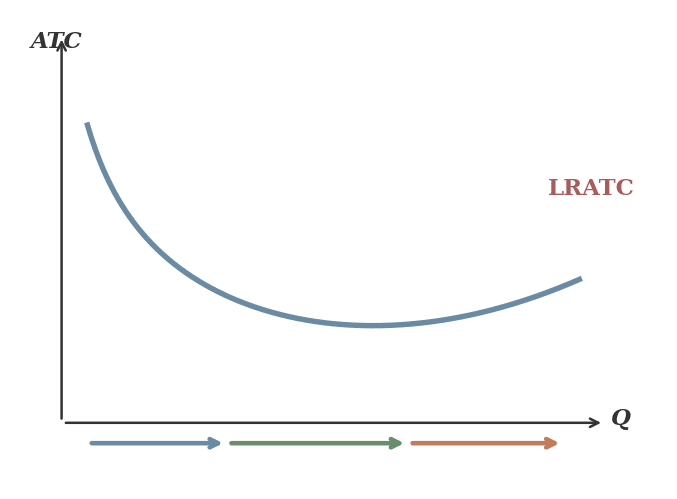
The U-Shape Implication — Not the Same as Returns to Scale
Given these relationships, what does the common “U-shape” of the long-run \(ATC\) curve imply for production?
Reading the U
At first average cost per unit falls (economies of scale). As output rises considerably, diseconomies of scale eventually take hold.
What causes diseconomies?
Overcrowding, overutilization of capital, organizational complexity, communication overhead, …
Not the same as returns to scale!
- Returns to scale describes how production changes when all inputs are changed by a common factor.
- Economies of scale does not impose this “common factor” rule on input proportions — the firm picks the cheapest mix at each \(Q\).
Application — Are Rooftop Solar Panels Driving Up Electricity Costs?
The boom
Installed US residential solar capacity grew ≈ 1,700% through 2022 as panel costs fell sharply, helped by federal and state subsidies.
But scale favours the utility
Economies of scale favour commercial solar farms over residential rooftops — MIT experts put residential solar at almost 2× the cost of commercial solar per kWh.
The feedback loop
California’s regulated prices encourage rooftop adoption ⇒ higher prices for the remaining ratepayers. This loop explains two-thirds of California’s residential price rise over 13 years.
Lesson: be cautious of decentralizing production when economies of scale exist.
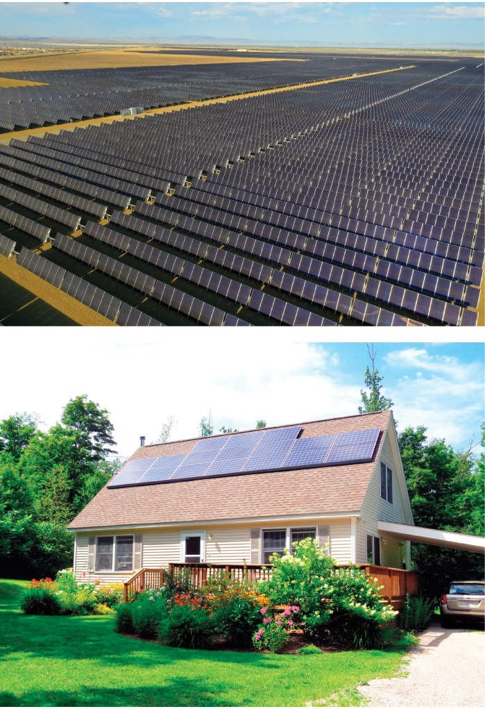
Economies of Scope
Economies of Scope
The simultaneous production of multiple products comes at a lower cost than if a firm made each product separately and added up the costs.
Why might a firm observe economies of scope?
1 · Flexible inputs or processes
An oil refinery makes many products at once by distillation — one barrel yields gasoline, diesel, jet fuel and LPG at far lower aggregate cost than producing each separately.
2 · Expertise that travels
Know-how carries across products — life and auto insurance share the same actuarial and claims-handling expertise.
Products from one barrel of crude oil (gallons, 2011)
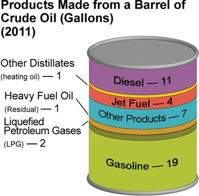
Where the saving comes from: shared inputs. Apple's iPhone lineup runs one design team, one supply chain and one OS across many models; the same chassis, sensors and software carry every product in the range.
Economies of Scope — Quantifying the Saving
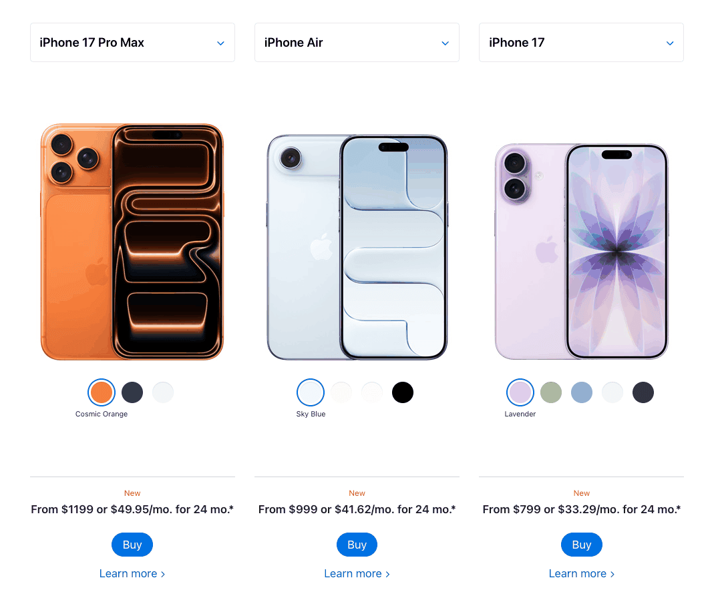
Good 1 = iPhone 17 Pro Max · Good 2 = iPhone 17
Where
\(TC(Q_1, 0)\) — cost of producing only Good 1. \(TC(0, Q_2)\) — cost of only Good 2. \(TC(Q_1, Q_2)\) — cost for one firm to produce both.
iPhone 17 example (annual)
\(TC(Q_1, 0) = \$90\text{B}\) (Pro Max only) · \(TC(0, Q_2) = \$70\text{B}\) (iPhone 17 only) · \(TC(Q_1, Q_2) = \$125\text{B}\) (joint).
SCOPE \(= 0.28 > 0\) ⇒ Apple gains strong economies of scope. Producing both phones together saves 28% versus two specialist firms producing them separately.
Economies of Scope — Uber’s Two Businesses
Same idea as the shared battery cell — but the shared input is now software, payments, and mapping. Uber’s rides and food-delivery businesses run on one stack, so the second business rides on cost the first already paid: \(c(q_1, q_2) < c(q_1, 0) + c(0, q_2)\).
Shared Infrastructure
one app binary · one payments stack · one maps + routing layer
Mobility
\$25.1B
FY2024 segment revenue
zero-dollar
cross-sell
Delivery
\$13.8B
FY2024 segment revenue
Acquiring a rider hands you an eater for free — no second acquisition cost. With the platform already built, the marginal cost of the second business is close to zero.
§8.8 Cost Minimization in Real Data
BLS cost shares · why a wage shock lands differently at TSMC
Chapter Summary
Cost-min problem
\(\min wL + rK\) s.t. \(f(K, L) \geq q\). Lagrangian FOCs ⇒ tangency \(\text{MRTS}_{LK} = w/r\); equimarginal \(MP_L/w = MP_K/r\).
Cost function (Cobb-Douglas)
\(c = (\alpha+\beta)(q/A)^{1/(\alpha+\beta)}(w/\beta)^{\beta/(\alpha+\beta)}(r/\alpha)^{\alpha/(\alpha+\beta)}\). Under CRS, linear in \(q\); cost shares = production exponents.
Marginal & average cost
\(MC = \partial c/\partial q = \mu\) by envelope theorem. \(MC = AC\) at \(AC\)'s minimum. Under CRS, \(MC = AC\) everywhere.
Shephard's lemma
\(\partial c/\partial w = L^*,\; \partial c/\partial r = K^*\). Recover conditional input demands from the cost function by differentiation.
SR vs LR
SR: \(K\) fixed at \(\bar K\). LR: both adjust. LR cost = lower envelope of SR family. SR isn't a clock-time concept — it's a flexibility concept.
Duality framework
Cost function and production function are equivalent representations of the firm's technology. Same machinery as consumer expenditure ↔ Hicksian.
Gigafactory locks (Ch 7 inheritance + Ch 8 additions): \(A=8,\, \alpha=0.4,\, \beta=0.6,\, q=32\) GWh, \(w = 0.10\), \(r = 0.13\). LR cost-min: \((K^*, L^*) = (2.68, 5.22)\); \(c^* = \$0.87\) B/yr. Inherited by Ch 9.
Coming Up — Chapter 9: Profit Maximization & Firm Supply
Today we built the cost function \(c(w, r, q)\) and the conditional input demands — what the firm spends given output.
Chapter 9 asks the second producer-theory question: given the cost function and an output price \(p\), how much output to produce?
\( \max_q \;\; p \cdot q - c(w, r, q) \quad \Rightarrow \quad p = \dfrac{\partial c}{\partial q} = MC \)
The headline result \(p = MC\) is the envelope-theorem identity from today, viewed from the output-choice side:
Supply curve
The firm’s supply is inverse-\(MC\) (above min AVC) — built directly from today’s cost function.
Hotelling’s lemma
Same envelope mechanics as Shephard — \(\partial \pi/\partial p = q^*\) recovers supply from the profit function.
Shutdown decision
Run iff \(p \geq \min AVC\) — today’s SR/LR distinction is what determines AVC.
Tesla wage shock, cont’d
Even once \(q\) is endogenous, the cost-min mix at each \(q\) is exactly what we built today.
Before next class: read manuscript §9.1–§9.3 and try Walkthrough 9.1 on your own. Today's gigafactory cost function carries over verbatim.
Questions?
Dr. Richeng Piao · ECON 2316 · Chapter 8